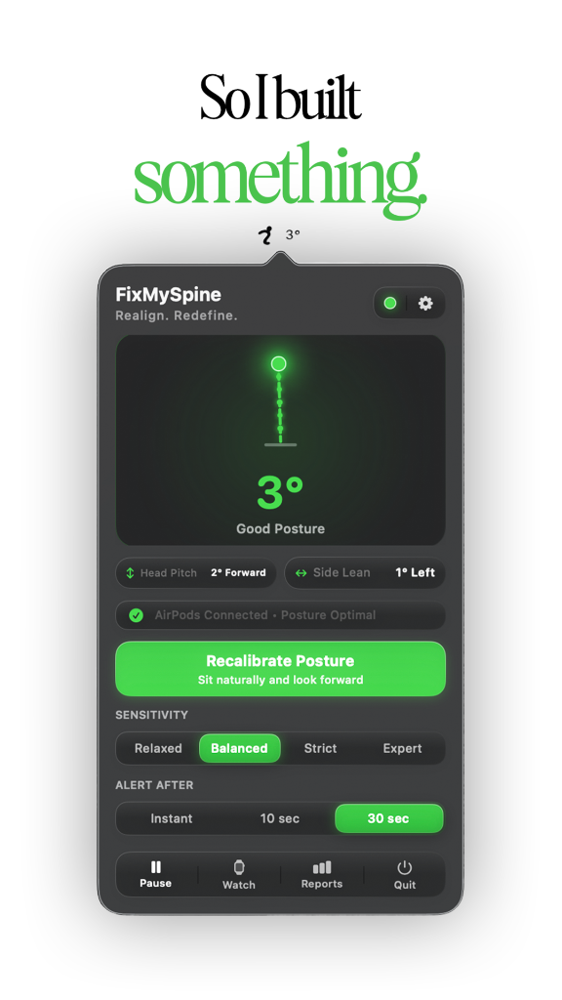
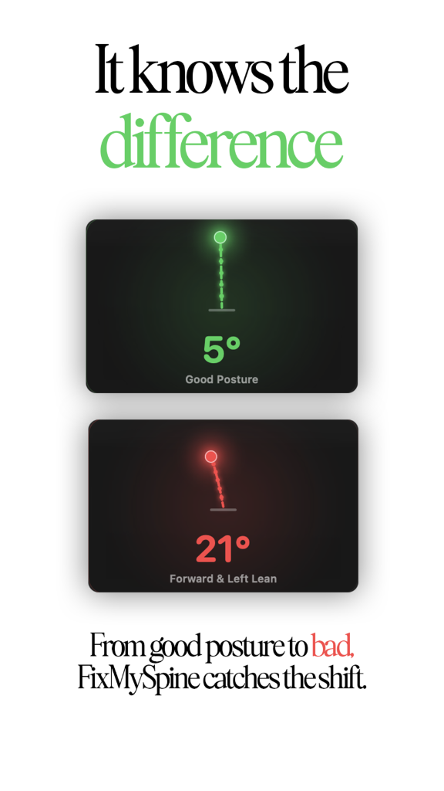
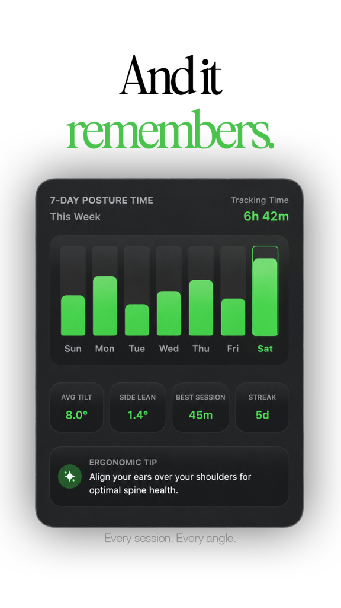

Wear your AirPods
Put them in and start FixMySpine. Tracking begins the moment they connect — any head-tracking model works.
AirPods Pro · Max · 3rd & 4th gen · Beats Fit ProYour AirPods. Your posture coach. Zero cameras.
The motion sensors inside your AirPods already track every degree of head movement. FixMySpine turns that signal into a silent posture coach — it notices the slump before your neck does.
A live simulation of the real gauge — no AirPods required. Green mirrors the app: 0–5° aligned, 6–12° drifting, past 12° you get a nudge.
Real telemetry, simulated in your browser · CMHeadphoneMotionManager does this sixty times a second
Product Tour
See how FixMySpine connects to your AirPods, catches micro-slumps, and keeps a detailed log of your spinal posture.
Direct CoreMotion 60Hz gyroscopes track head pitch and roll over Bluetooth Low Energy.

A featherlight native macOS menu bar companion built in Swift 6 & SwiftUI.

Compound biometric filter ignores casual sips, nods, and screen glances.

Private on-device posture score tracking, day-by-day logs, and spinal discipline streaks.
The problem
You never decide to slouch. Forty minutes into a focus session your chin drifts forward, your shoulders roll in — and your neck quietly absorbs every degree.
FixMySpine exists to interrupt that drift. Gently. Early. Every single time.
How it works
Every head-tracking AirPod carries an IMU built for spatial audio. FixMySpine reads that signal through Apple’s CoreMotion — no extra hardware, nothing clipped to your shirt.
CMHeadphoneMotionManager
Your earbuds measure head pitch (nod) and roll (side-lean) as you move.
Each sample places your head precisely in space, relative to true vertical.
One calibration captures your neutral posture — desk height, screen distance, anatomy.
The angle between now and neutral, computed every frame — forward tilt and side lean, separately.
A built-in grace window means sipping coffee or glancing down never triggers a false alarm.
The interface
One glance tells you everything: current tilt, side lean, and how you’re trending. Drag the slider — the app window reacts exactly like the real one.
Sensitivity presets mirror the app: Relaxed 18° · Balanced 12° · Strict 8° · Expert 5°
Get started
No accounts. No calibration charts taped to your monitor. Just your AirPods and one click.
Put them in and start FixMySpine. Tracking begins the moment they connect — any head-tracking model works.
AirPods Pro · Max · 3rd & 4th gen · Beats Fit ProSit naturally the way you actually work, then click Calibrate. That posture becomes your personal neutral baseline.
Takes seconds · re-calibrate anytimeFixMySpine watches quietly from your menu bar. You'll forget it's there — until it gently reminds you to realign.
Voice cues · notifications · watch tapsEverything it does
Every control you need, exactly where the pros put it — one click away in the menu bar, zero windows stealing your focus.
Everyone’s desk, display distance, and spine are different. FixMySpine never judges you against a generic angle — calibrate your natural working posture and every measurement after that is relative to you.
Choose exactly how much drift is allowed — and how long it must persist — before you’re nudged. Natural movements never ring the bell.
When slouching persists past your grace period, a calm spoken cue from your Mac resets your shoulders — or a silent notification, if you prefer.
Pair any Bluetooth LE smartwatch or fitness wearable (Apple Watch, Garmin, Wear OS, and BLE heart rate monitors). Feel a gentle wrist vibration when posture slips — silent in meetings, invisible in open offices.
Daily posture scores, average tilt, streaks, and tracked hours — your week at a glance.
Pick a native accent — green, blue, purple, orange, pink, or any color your heart desires. Try one: it restyles this whole page.
Private by architecture
FixMySpine makes zero network calls. The motion math happens in local memory, your history lives in UserDefaults, and the microphone is never touched.
No tracking servers, no telemetry, no accounts. The app has nothing to phone home to.
CoreMotion reads spatial motion only — never sound. Your conversations stay yours.
Every update ships through Sparkle 2 with cryptographic signature verification.
Compatibility
If your Mac or iPhone is up to date and your earbuds do spatial audio, you’re ready. No dongles, no extra sensors.
Your head-tracking device must be connected and active — playing audio or in ANC / transparency mode — for macOS to stream its motion data.
Automatic updates arrive through Sparkle 2, verified against a cryptographic Ed25519 public key before installing.
Your AirPods are already on your head. Put them to work protecting your neck.